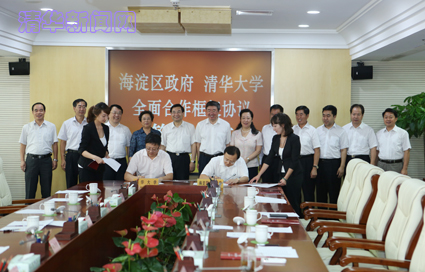
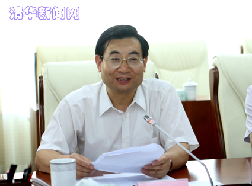

清华大学与海淀区签署全面合作框架协议
清华新闻网9月6日电 （记者 李含）9月5日，清华大学-海淀区人民政府全面合作框架协议签约仪式在海淀区人民政府举行。北京市教工委常务副书记刘建，市科委主任闫傲霜，中关村管委会委员张茂盛，海淀区区委书记隋振江，区长孙文锴，区政协主席彭兴业，区委常委、组织部部长杨智慧，区委常委、区委办主任李彦来，区委常委、宣传部部长陈名杰，副区长陈双、孟景伟、傅首清等出席签约仪式。清华大学校长陈吉宁、校党委书记胡和平、常务副校长程建平、副校长姜胜耀、吉俊民等参加了签约仪式。陈吉宁、孙文锴分别代表双方签署协议。

图为陈吉宁、孙文锴分别代表双方签署协议。记者 智斐 摄

图为胡和平在签约仪式上讲话。记者 智斐 摄
胡和平对双方全面合作框架协议的签署表示祝贺，对海淀区对学校发展的支持表示衷心感谢。胡和平说，长期以来，清华大学的建设发展得到了海淀区的大力支持，区委区政府历任领导及各部门领导多次来校调研指导工作，对学校创建世界一流大学给予了多方面的帮助。清华大学也一直把为区域经济社会发展服务作为学校办学的重要职能和建设世界一流大学的重要内容，努力为海淀区的发展作出贡献。胡和平表示，此次协议的签署标志着双方合作迈上了一个新的台阶。双方将通过合作，共同建设产业创新和成果转化平台，促进文化科技融合，加快建设具有全球影响力的科技创新中心，为建设中国特色国家创新体系和世界科技强国贡献力量。未来，清华大学将与海淀区共同携手，不断拓宽合作领域，深化合作内容，加大合作力度，锐意进取，扎实工作，共同为实现中华民族伟大复兴的中国梦作出新的更大的贡献。
海淀区和清华大学有关部门负责人参加了签约活动。
编辑：欣研